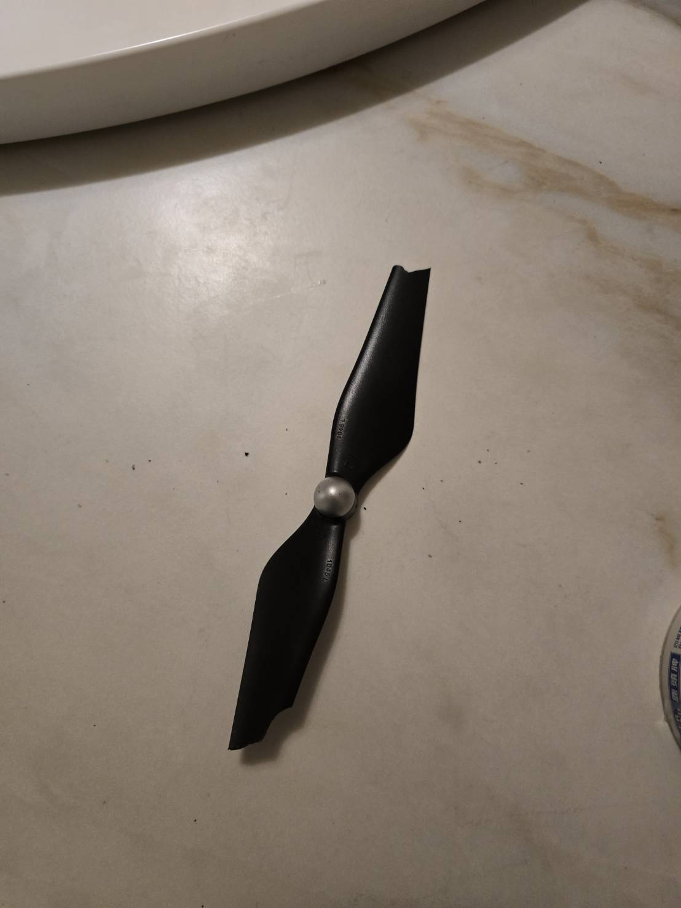
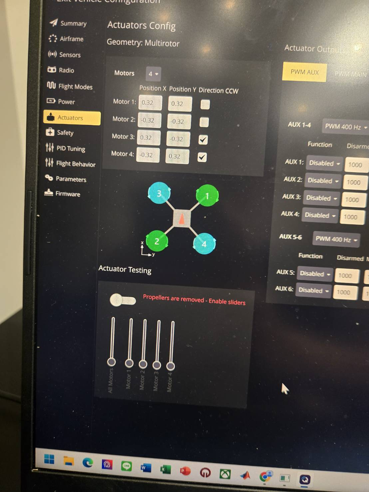
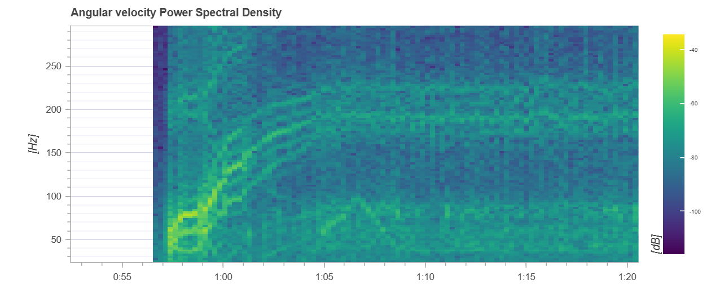
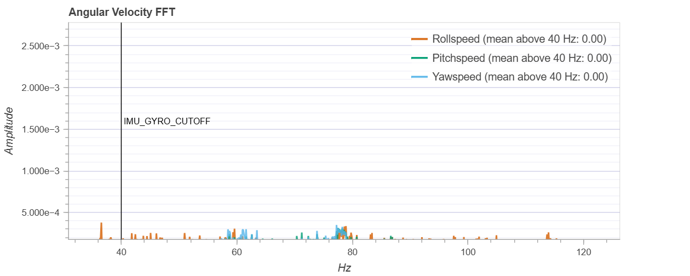
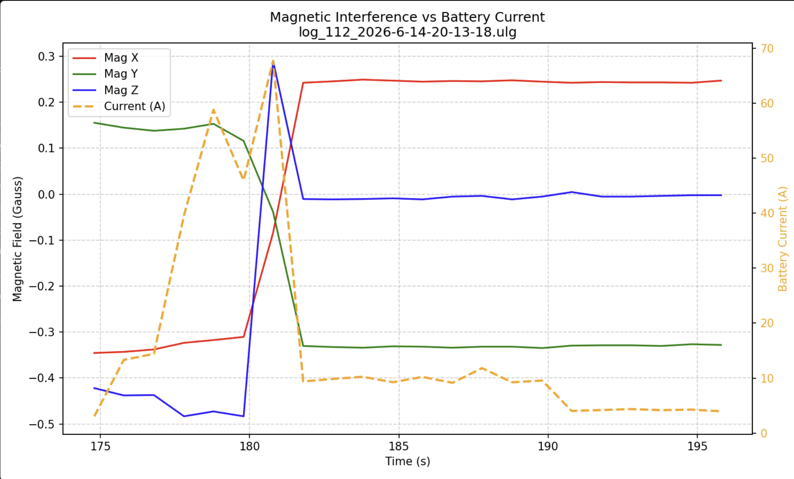
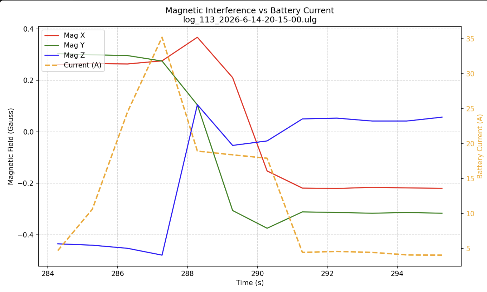
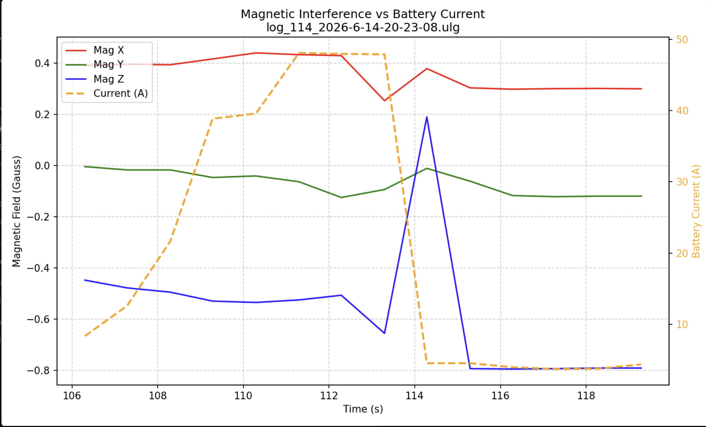

verify_flight.py
Checks selected parameters, battery behavior, CPU/system messages, and other pre-flight or post-flight conditions.
I used failed flight tests and PX4 logs to identify stability problems, tune filtering and control parameters, and build automated diagnostic tools.
The first two major tests exposed configuration and stability problems. The third major test followed log analysis, gyro filtering, and retuning.
The first test included incorrect parameters, poor GPS reception, and propeller-related issues. I corrected these problems before continuing with control-system tuning.


I inspected angular-velocity frequency content to identify vibration bands and select gyro/notch-filter settings.


I wrote Python scripts using pyulog to automate repeated post-flight checks instead of reviewing every log manually.
Checks selected parameters, battery behavior, CPU/system messages, and other pre-flight or post-flight conditions.
Reviews estimator status, EKF flags, compass faults, and attitude-related failures.
Compares battery current and magnetometer measurements to identify possible electromagnetic interference.
Generates visual summaries from PX4 flight-log data for faster inspection.
The analysis script plots battery current against the three magnetometer axes. Synchronized changes in several logs gave me evidence to investigate electrical interference and wiring placement.


